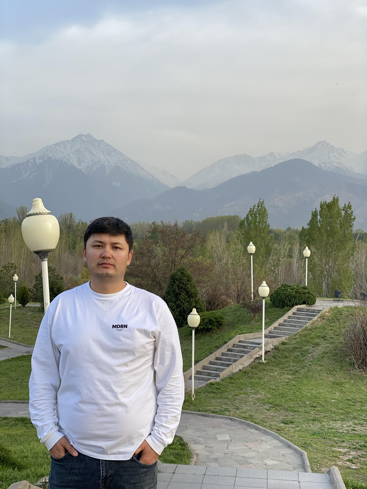

Dauren Baltabekov

Summary
I am Oil & Gas professional with fifteen years of expererience switching to IT industry.
My goal is to get a job as a Software Engineer.
Education
- Mechanical Engineering
- Bachelor's Degree
- Class of 2008
- Kazakh-British Technical University
- City of Almaty, Kazakhstan
Work Experience
- Leak Test Supervisor
- Since February 2023 till present
- Tengiz Oilfield
- "Kent" PLC
Skills
- People Management
- Project Management
- Contracts Management
- Interface Management
Certifications
- Web Development Certificate
- Nitrogen Awareness
- Leak Testing Certificate
- People Management Certificate
- Schlumberger MWD/LWD Engineer-1 Certificate